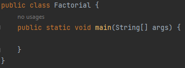
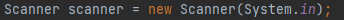
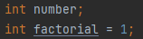
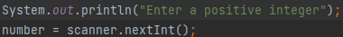
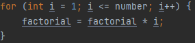
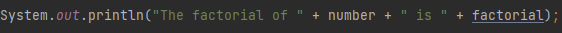
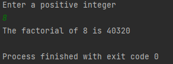

Create a new Java file.
In the main method, create a Scanner object. This is needed to get the user input.
Next, create two integer variables that will hold the initial value and the factorial. The initial value of factorial should be set to 1. This is because only positive integers have factorials, so the lowest value that the user should input is 0, and the factorial of zero is 1. Having an initial value of zero will skip the loop in our program that calculates the factorial.
Prompt the user to input a positive integer. Store the value in the first integer variable.
Create a for loop that will repeatedly execute statements as long as the condition is true. In a for-loop, there are three statements in the condition area: the first part will be executed once, before the entire loop; the second part is the condition that will be checked every iteration; and the third part is executed on every iteration.
Initially, we have a variable "i" which starts with a value of 1. This variable will be multiplied to our factorial variable on each iteration, while also increasing its value by 1. This way, we get the exact value of the factorial when the condition becomes false: if the value of i is greater than our initial value.
Finally, print out the result for the user to see.
Output:
